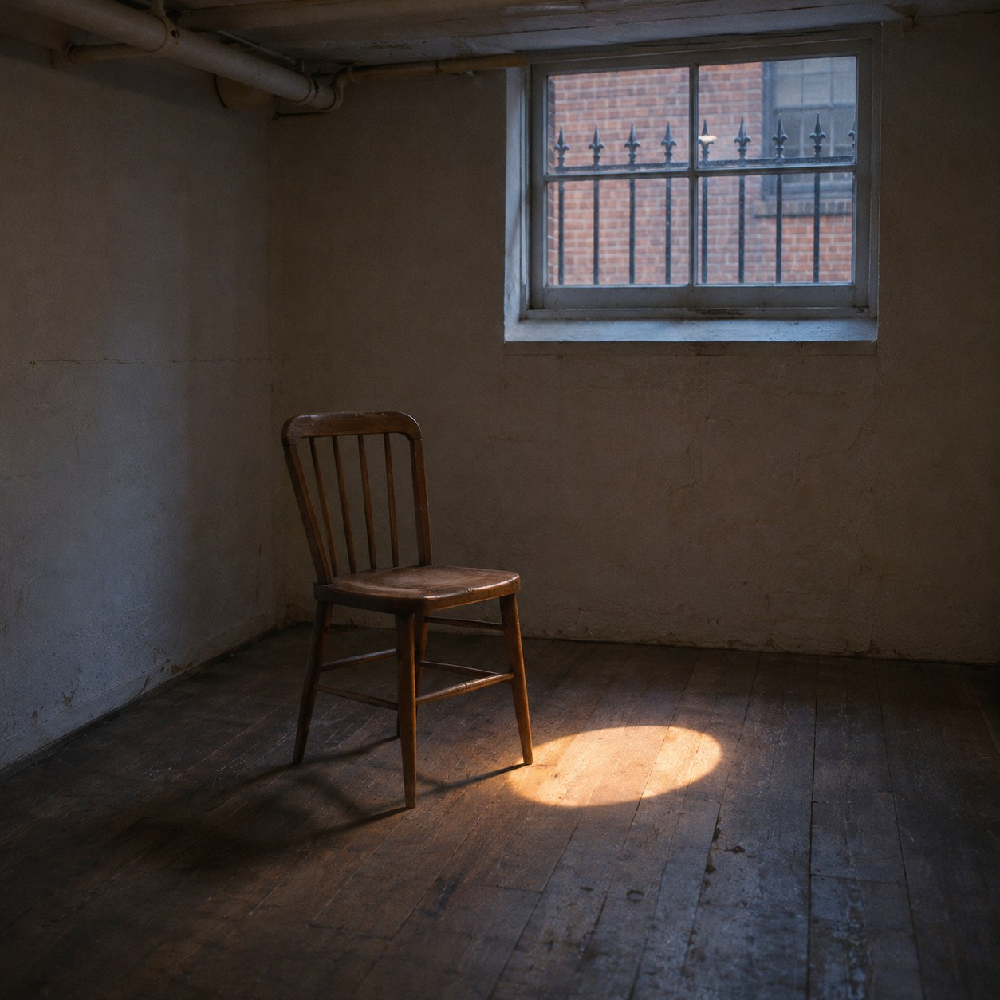
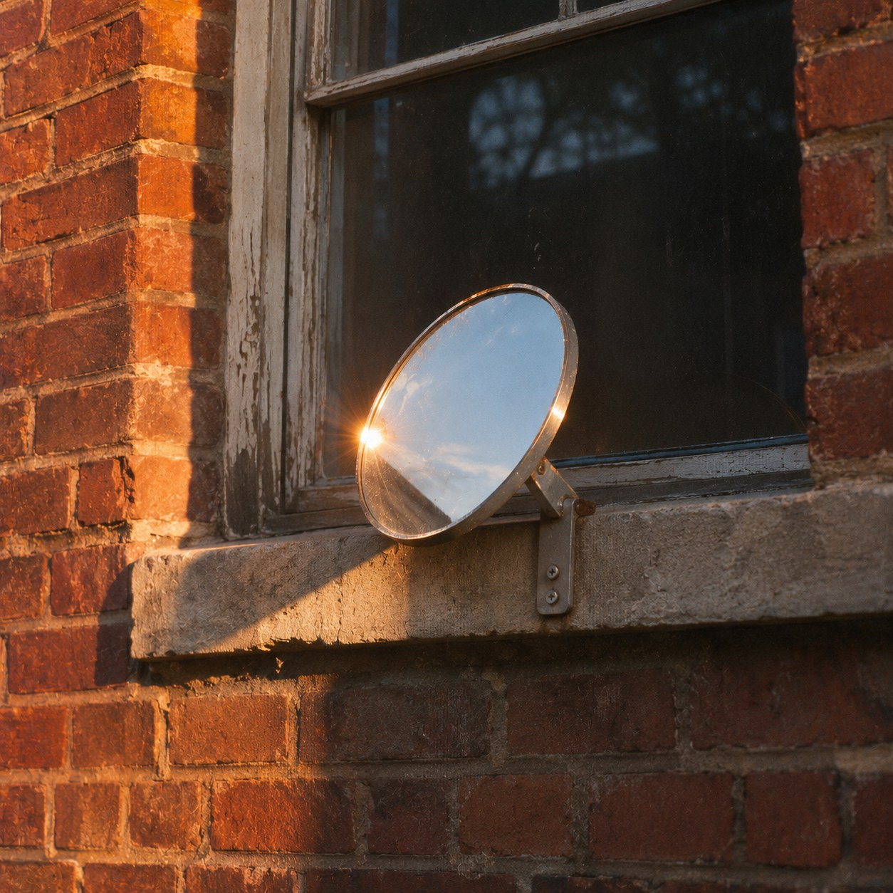

Lent Sun


Across a narrow street from a basement room, a window high up gets the winter sun. A small round mirror is fixed to its sill on a bracket, tilted so that for eleven minutes each afternoon a patch of light falls down past the railings and onto the floor of a room the sun does not otherwise reach between November and February.
Nothing is made here. The light is taken at one window and handed to another. It is strange that this feels like giving, because sunlight seems like the one thing no one can own. And yet we act as if someone does. In England a window that has had daylight for twenty years can win a legal right to keep it, and some old walls in London still carry small painted signs that say ANCIENT LIGHTS, as if daylight were a kind of land, fenced by time.
There is an old story that Alexander came to Diogenes, who was lying in the sun, and offered him whatever he wanted. Diogenes asked him to stand a little out of his light. The most powerful man alive was taking the only thing Diogenes had, simply by standing there.
The mirror stands in the way of the sun on purpose. It blocks a hand's width of it, which the window above will never miss, and sends that width down to a floor that will wait for it.
So what has been given? Not the light, which was always going to land somewhere. Only a choice about where it lands, made by someone who will never see it arrive.